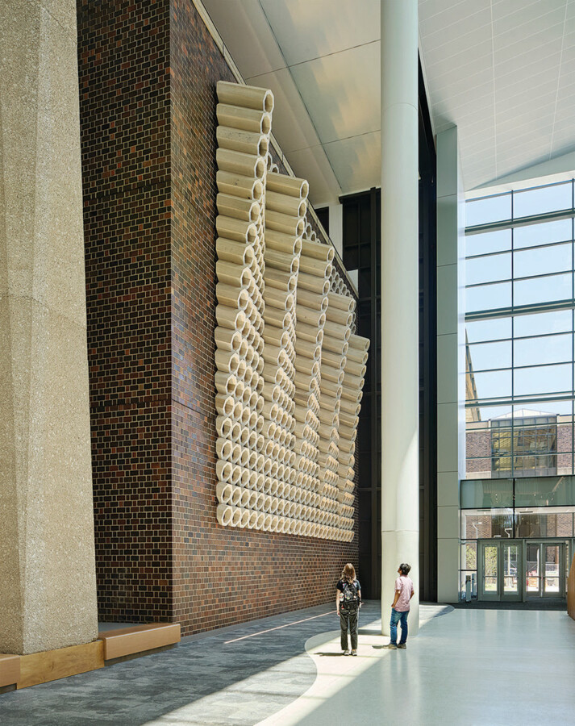

Creating Scala
Join us for a screening of Scala: The story behind Edra Soto and Dan Sullivan’s monumental public art piece at University of Illinois Chicago
A film by DHPixels, Produced by Builder Growth
Screening followed by a conversation with the artists, moderated by Lorelei Stewart director and chief curator of UIC Gallery 400
In 2022, artists Edra Soto and Dan Sullivan were commissioned to create Scala, a monumental, 160‑foot-long sculptural installation for the Computer Design and Research Learning Center at the University of Illinois Chicago (UIC). Composed of more than 17,000 pounds of custom-crafted poplar wood, Scala suspends hundreds of octagonal modules from a historic Walter Netsch–designed brick wall—an artwork that is equal parts vision, collaboration, and serious engineering.
Filmed by Andrew Harris (DH Pixels) and produced by Builder/Growth, the documentary follows the project from commission to completion: early concept drawings, fabrication at Navillus Woodworks, structural problem‑solving with Bob Magruder (Goodfriend Magruder CMD), the precision of installation with Methods & Materials, and the moment the finished work is revealed inside UIC’s soaring atrium. Along the way, the film foregrounds themes of belonging, vernacular Caribbean architecture, labor, and trust.
About the Artists:
Edra Soto is a Puerto Rican-born artist whose work is at the intersection of architectural language and social practice, fostering conversations about historic structures, diasporic identity, memory, and loss. Her work is held in the collections of the Whitney Museum of American Art and the Art Institute of Chicago, among others.
Dan Sullivan is a Chicago-based designer, fabricator, and musician, and the founder of Navillus Woodworks. Working out of Dock 6 Collective, he creates custom furniture and architectural elements while maintaining an active music practice as Nad Navillus.